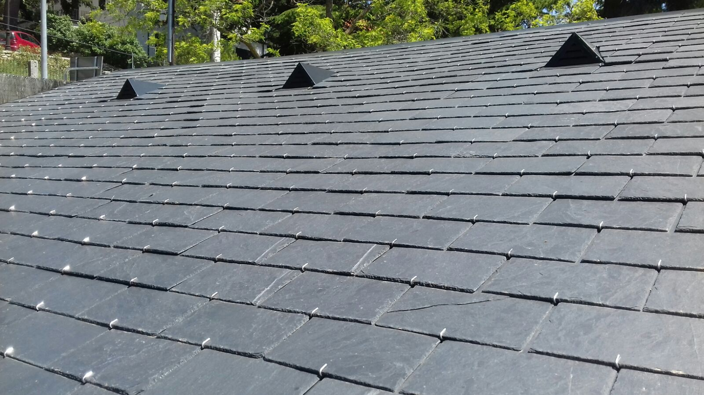

Cubiertas y tejados de Pizarra
Instalación y restauración de cubiertas con pizarra natural española. Material con durabilidad superior a 100 años, resistente al hielo y al fuego, ideal tanto para obra nueva como para la rehabilitación de edificios históricos. La pizarra de Galicia y Castilla y León es reconocida mundialmente como la de mayor calidad, y trabajamos exclusivamente con los mejores distribuidores del sector.
- Durabilidad +100 años
- Resistente al fuego y al hielo
- Mantenimiento mínimo
- Material natural y sostenible
- Ideal para edificios históricos
